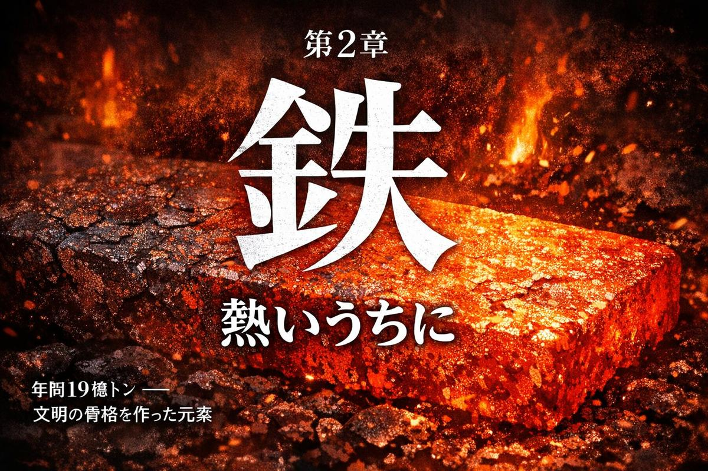
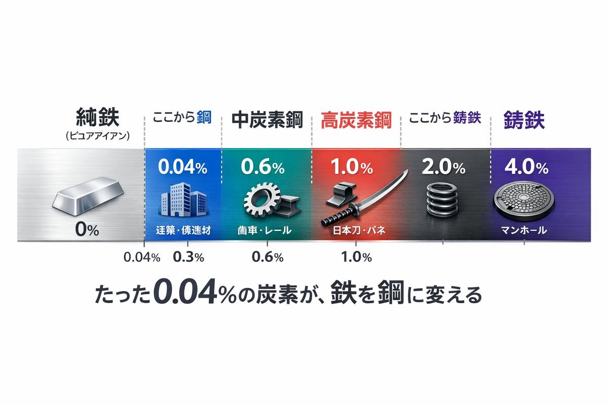
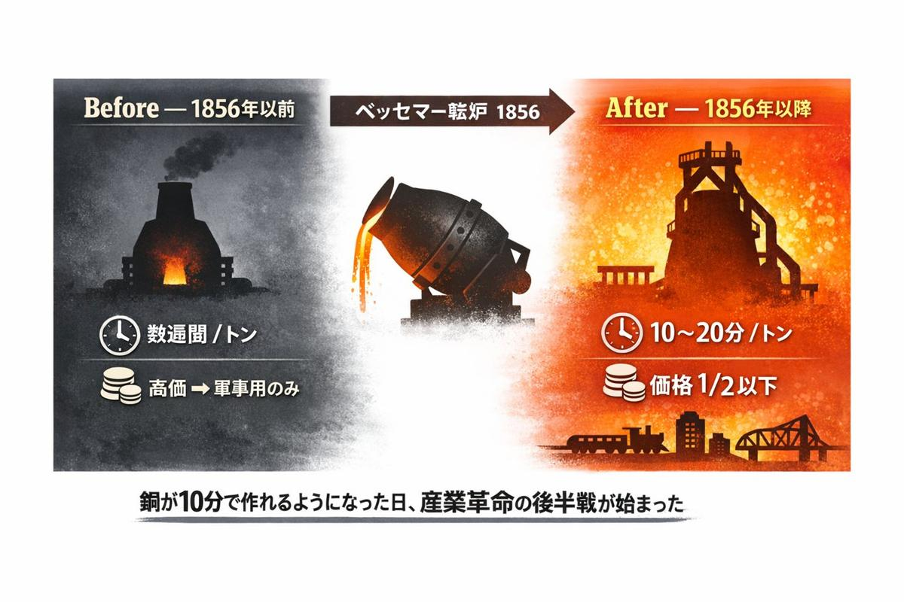
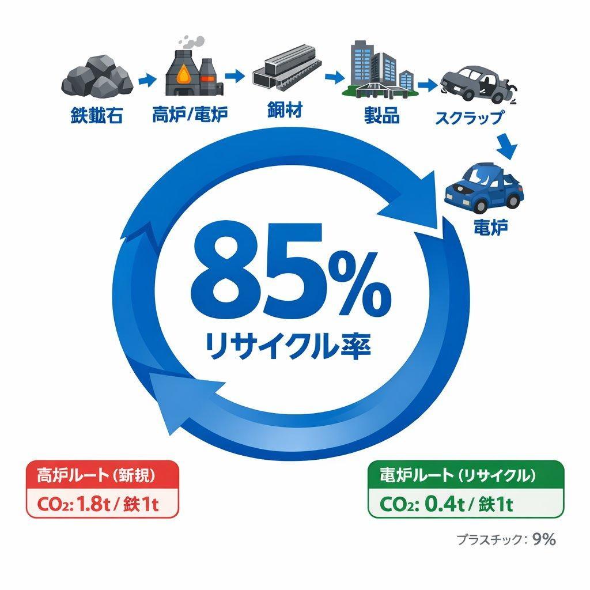
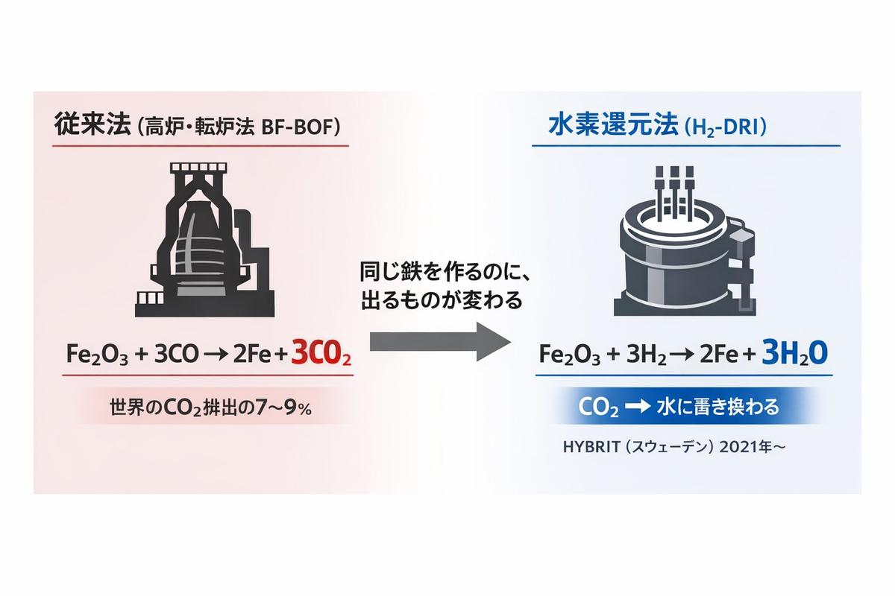
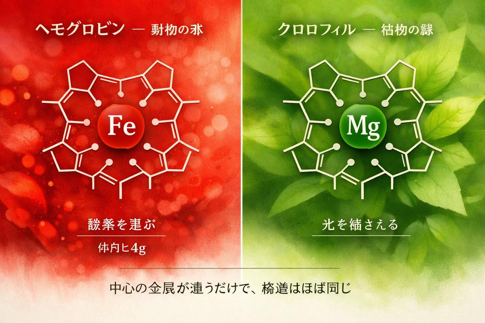
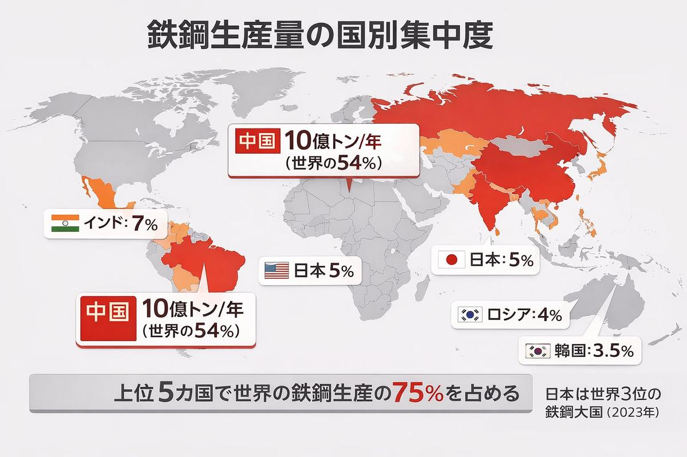
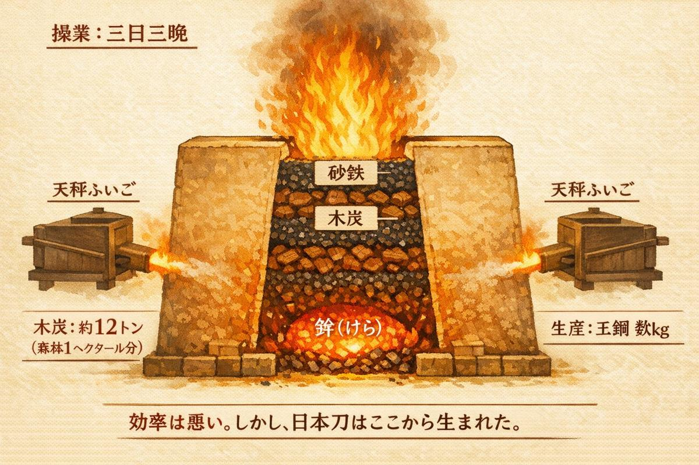

たたら吹く 炎のなかに 鉄の声
── 詠み人知らず
A. 鉄のほうが青銅より硬かったから
B. 鉄鉱石のほうが豊富だったから
C. 青銅の材料が手に入らなくなったから
正解はC。紀元前1200年頃、青銅の原料であるスズの交易ネットワークが崩壊した。
ヒッタイト帝国の滅亡、ミケーネ文明の崩壊、エジプト新王国の衰退。地中海世界を結んでいた長距離交易がほぼ同時に断絶した。歴史学者はこれを「前1200年のカタストロフ」と呼ぶ。青銅は銅とスズの合金だが、スズ鉱床はごく限られた場所にしかない。交易路が閉ざされた瞬間、青銅は作れなくなった。
鉄は代替品として登場した。「より優れていたから」ではなく、「それしかなかったから」だ。
実際、初期の鉄器は青銅器より脆かった。炭素量を制御できず、錆びやすく、鋳造も難しい。鉄が青銅を性能で上回るには、浸炭と焼入れの技術が確立される数百年を待たねばならなかった。
文明の転換点は、しばしば「進歩」ではなく「崩壊」によって訪れる。
鉄は地球で最も多い元素だ。質量比で約36%。
これは直感に反するかもしれない。地表にいると岩と土ばかりで、鉄の気配は薄い。しかしそれは表面の話だ。地球のコア（核）はほぼ純粋な鉄とニッケルの合金でできている。半径約3,500kmの巨大な鉄球が、私たちの足元に眠っている。
この鉄のコアが対流することで地球の磁場が生まれ、太陽風から大気を守り、生命が存在できる環境を維持している。つまり鉄は、人間が「使う」よりもはるか以前から、人間が「存在できる」条件そのものを作っていた。
地殻に限れば鉄は4番目（約5%）で、酸素、ケイ素、アルミニウムに次ぐ。それでも金や銀の数万倍豊富で、銅の100倍以上ある。鉄器時代が始まったもう一つの理由はここにある。鉄鉱石は、どこにでもあった。
純粋な鉄は柔らかい。金ほどではないが、爪で傷がつくくらいには柔らかい。このままでは剣にも橋にもならない。
鉄を「鋼（はがね）」に変えるのは、炭素だ。

炭素がたった0.04%入るだけで、鉄は建築に使える素材になる。0.6%で刀になり、2%を超えると今度は硬すぎて割れる。
日本刀の「折り返し鍛錬」は、まさにこの炭素濃度を部位ごとに制御する技術だ。刃先は高炭素で硬く、芯は低炭素でしなやか。異なる炭素濃度の鉄を何層にも折り重ねることで、「硬いのに折れない」という矛盾を実現した。
たかが炭素。されど、その百分の一パーセントの違いが、文明の形を決めた。
3,000年ものあいだ、鉄づくりは「遅い仕事」だった。炉に鉱石と炭を詰め、何時間もかけて熱を送り、少量の鉄を取り出す。鋼を得るにはさらに何日も鍛造を繰り返す。1トンの鋼を作るのに数週間。
1856年、イギリスの発明家ヘンリー・ベッセマーがすべてを変えた。

ベッセマー転炉。溶けた銑鉄に空気を吹き込むだけで、余分な炭素が燃え、10〜20分で鋼ができる。それまで数週間かかっていた工程が、分単位になった。
効果は即座に現れた。鋼の価格は10年で半分以下に落ち、生産量は爆発的に増えた。鉄道のレールが安くなり、大陸横断鉄道が敷かれ、橋が架かり、高層ビルが立ち始めた。ベッセマー転炉は「鉄を民主化した」と言ってもいい。
鉄には致命的な弱点がある。錆びる。
4Fe + 3O₂ → 2Fe₂O₃
鉄は酸素と出会うだけで、元の鉱石に戻ろうとする。人間が苦労して鉱石から取り出した鉄は、放っておけば自然に鉱石に帰る。これを熱力学の用語で「自発反応」と呼ぶ。鉄が錆びるのは欠陥ではなく、宇宙の法則だ。
世界全体の腐食による経済損失は年間2.5兆ドルとも言われる。人類は鉄を守るために、塗装し、メッキし、合金にし、犠牲陽極を取り付ける。ステンレス鋼はクロムを10.5%以上添加することで、表面に酸化クロムの不動態膜を形成し、錆を防ぐ。鉄を鉄以外のもので包むことで、鉄を鉄のまま使う。
これは皮肉ではなく、素材工学の本質だ。素材の欠点を別の素材で補い、組み合わせによって自然の法則と交渉する。
しかし鉄には、錆びやすさを補って余りある美徳がある。リサイクル率85%。

鉄は溶かせば何度でも使える。自動車のボディが解体され、電炉で溶かされ、鉄筋になり、ビルの骨格になる。そのビルが解体されれば、また溶かされて次の何かになる。鉄は死なない。形を変えて循環する。
この循環を支えているのが電炉（EAF）だ。鉄鉱石から新しい鉄を作る高炉と違い、電炉はスクラップ鉄を電気で溶かすだけ。CO₂排出量は高炉の4分の1。世界の鉄鋼生産の約30%がすでに電炉で行われている。
鉄は「使い捨て」の対極にいる素材だ。3,000年前の鉄釘に含まれる鉄原子が、今あなたが座っている椅子の脚に入っている可能性すらある。
美徳がある一方で、鉄は気候の加害者でもある。人類は年間約19億トンの粗鋼を生産しており、その70%が高炉-転炉法（BF-BOF）で作られる。

鉄を作るたびにCO₂が出る。これは「エネルギーとしての石炭」ではなく「還元剤としての炭素」であるため、再生可能エネルギーに切り替えても解決しない。鉄鋼業が世界のCO₂排出量の7〜9%を占め続ける理由はここにある。
解決策はある。水素還元製鉄（H₂-DRI）だ。CO₂の代わりに水が出る。スウェーデンのHYBRITプロジェクトは2021年に世界初の化石燃料フリー鉄鋼を試験出荷した。ただしコストは従来法の2〜3倍。2050年に世界の鉄鋼生産の何割がこの方法に切り替わっているかは、水素価格と炭素税のバランスにかかっている。
鉄はあなたの中にもいる。
成人の体内には約4グラムの鉄がある。少なく聞こえるかもしれないが、もしこの4グラムが消えたら、あなたは数分で死ぬ。

鉄はヘモグロビンの中心に座り、酸素分子を掴んで全身に運ぶ。鉄が錆びるのと同じ化学反応が、あなたの血液の中で毎秒起きている。
動物の血が赤いのは鉄のせいで、植物の葉が緑なのはマグネシウムのせいだ。ヘモグロビンとクロロフィルは、中心の金属が違うだけで構造はほぼ同じ。地球が鉄の惑星であることと、地球上の生命が鉄に依存していることは、偶然の一致ではない。
砂の製造エネルギーが0.1 MJ/kgだったのに対し、鉄鋼は25 MJ/kg。250倍のエネルギーを必要とする。
ではなぜ鉄はこれほど使われるのか。答えは「引張強度」にある。砂（コンクリート）は圧縮には強いが、引っ張ると簡単に割れる。鉄は引っ張っても伸びるだけで切れない。鉄筋コンクリートという発明は、「押されても耐える砂」と「引かれても耐える鉄」を組み合わせた構造だ。
素材は単体ではなく、関係の中で機能する。砂と鉄は、一方が他方の弱点を補う共犯関係にある。

日本には「たたら製鉄」という独自の製鉄法があった。砂鉄と木炭を三日三晩燃やし続け、炉の底に「鉧（けら）」と呼ばれる鋼塊を得る。その鉧から選び出された最良の部分が「玉鋼（たまはがね）」であり、日本刀の素材となる。

1基のたたら炉で1回の操業に使う木炭は約12トン。それを得るために伐採される森林は約1ヘクタール。中国山地の山々が禿げ山になった一因は、たたら製鉄だった。
近代製鉄法の導入により、日本のたたら製鉄は明治中期に次々と操業を停止した。現在、伝統的なたたら操業を続けているのは島根県奥出雲の日刀保たたらただ1箇所。年に3回だけ火が入る。
鉄は文明の骨格を作ったが、その代償として森を食い尽くした。そして近代化は、森を救う代わりに、空を汚した。素材のジレンマは、いつの時代も変わらない。
「鉄は熱いうちに打て」ということわざがある。英語でも "Strike while the iron is hot." だ。
この言葉は比喩として有名だが、冶金学的にも正確だ。鉄は高温（900℃以上）でオーステナイトという結晶構造に変わり、柔らかくなる。このとき叩けば自在に形を変えられる。冷えるとフェライトやマルテンサイトに戻り、もう動かない。
つまり「チャンスは一瞬しかない」という教訓は、鉄の相変態という物理現象の、正確な記述なのだ。
人類は鉄とともに5,000年を過ごしてきた。その間に鉄は、武器になり、農具になり、鉄道になり、ビルの骨格になり、あなたの血液の中で酸素を運んだ。錆びても溶かせば蘇る。85%が循環し、形を変えて次の時代に渡される。
4グラムの鉄が、今もあなたの中で、熱いうちに働いている。